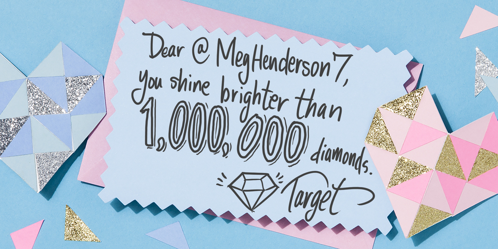
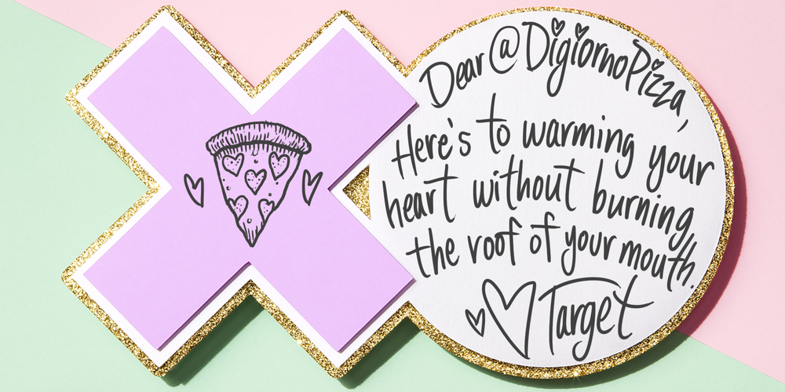
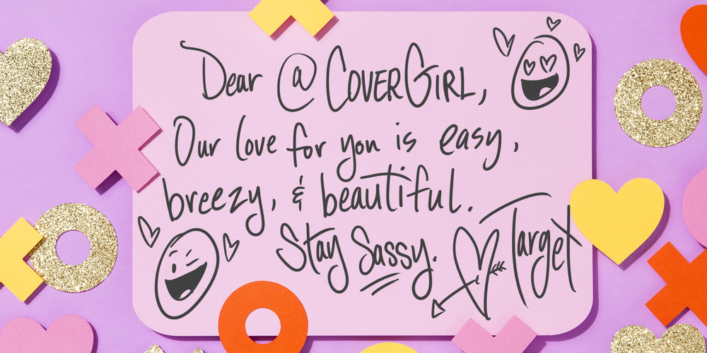
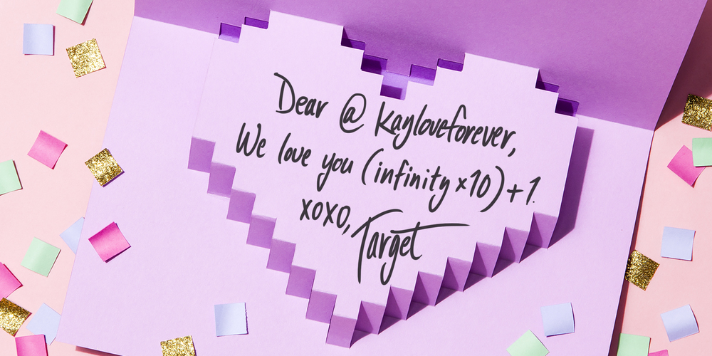
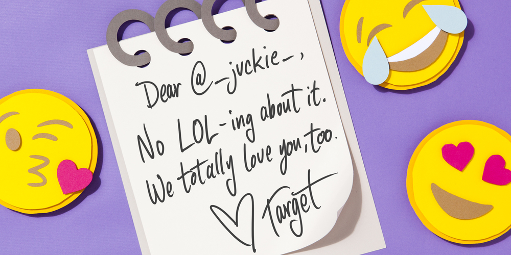
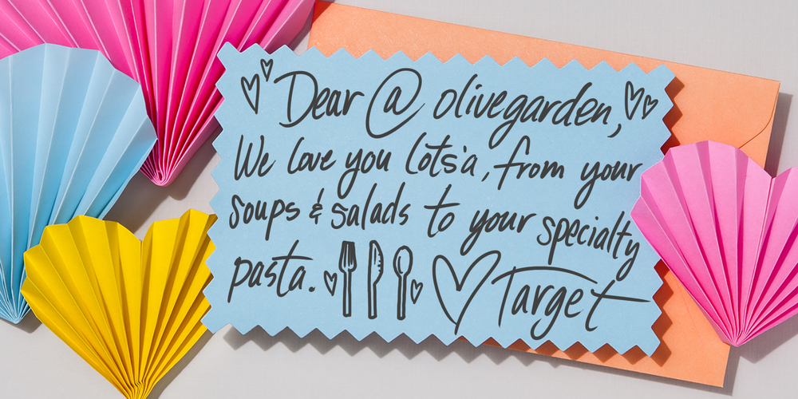

In 2015, customers said "I love you Target," 1.4 million times on social media. Their love for the brand is pure and powerful, but are they feeling the love back?
For Valentine's Day, we made sure our customers knew we loved 'em back. We created homemade valentines, photographed them, then digitally hand wrote personalized #TargetLoveNotes.
We sent 1,000+ handwritten, customized love notes to customers, brands, and influencers. As a purely organic activation on Twitter, #TargetLoveNotes generated 3 million impressions, 3,200 mentions, and a 6.96% engagement rate.





